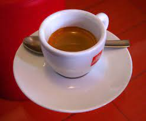
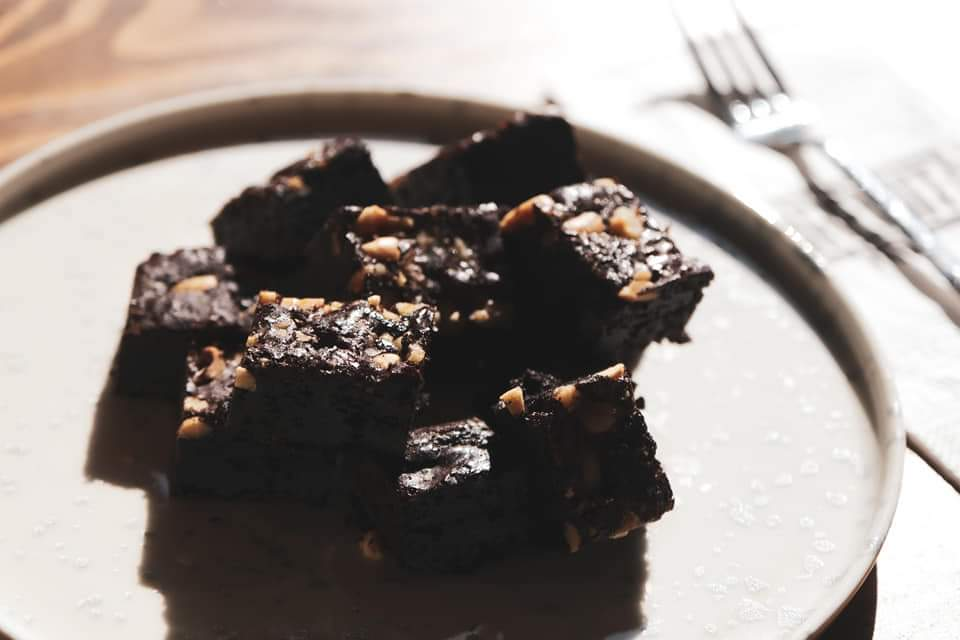
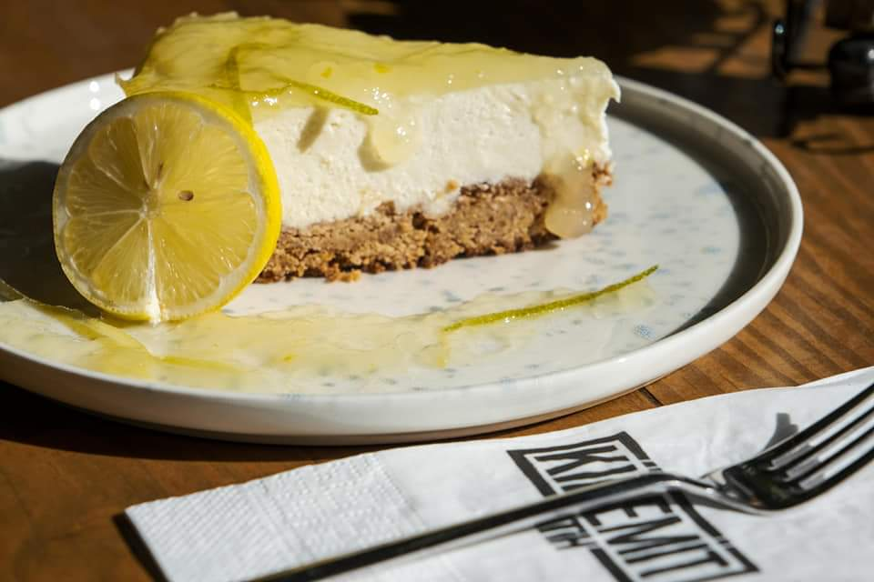
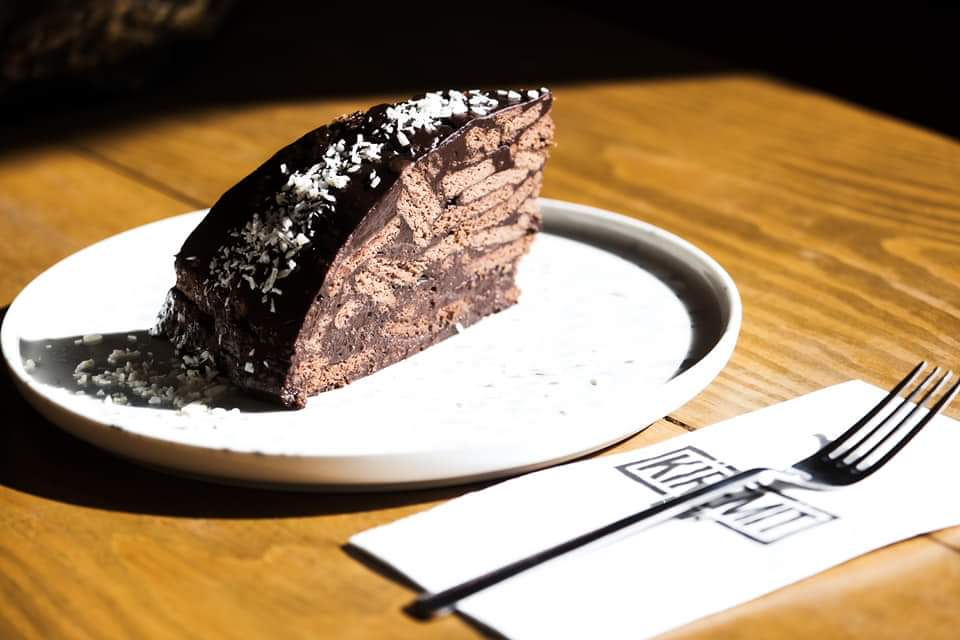

Hakkımızda
Sevgimizi ifade etmenin bir yolunu arıyoruz..
‘Sevgimizi ifade etmenin bir yolunu arıyoruz’ sloganıyla yola
çıkan ve 2020 yılının Haziran ayında, dünyanın en güzel şehri
İstanbul’un tam ortasında tarihi sur içi Fatih’te hizmete giren
Kiremit Fatih, hem geleneksel hem en yeni lezzetleri içeren, doğal
ve el yapımı olarak oluşturduğu zengin menüsü, şehrin hoş ama
bazen yoran karmaşasından uzaklaştıran bahçesi, profesyonel ve
sıcakkanlı hizmet anlayışı ile misafirlerinin memnuniyetini
önceleyerek yoluna devam etmektedir.
Annelerin gurbetten gelen evlatlarına kurduğu sofra sıcaklığını
hissettirmek, insana verdiğimiz kıymeti göstermek ve hak ettiğini
düşündüğümüz kaliteli ürün ve hizmeti ulaştırmak gayretindeyiz.
Alışveriş arası yorgunlukların atıldığı, iş toplantılarının
keyifli sohbetlere dönüştüğü, dostlarla buluşmanın bir başka
tatlandığı Kiremit Fatih, sizlere hoş lezzetler ve sohbetler
sunuyor.
Usta ellerden çıkan, yorumladığımız farklı tatları, en özel kahve
çekirdeklerini, en doğal bitki çaylarını içeren zengin menümüzü
beğenilerinize sunarak, en güzel buluşmaları yaşamanız ve en
unutulmaz anıları biriktirmeniz ümidiyle sizleri bekliyoruz.
Menü
Amerikano

Espresso

Filtre kahve

browni

cheescake

Kiremit pasta